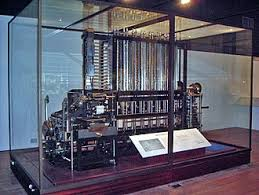
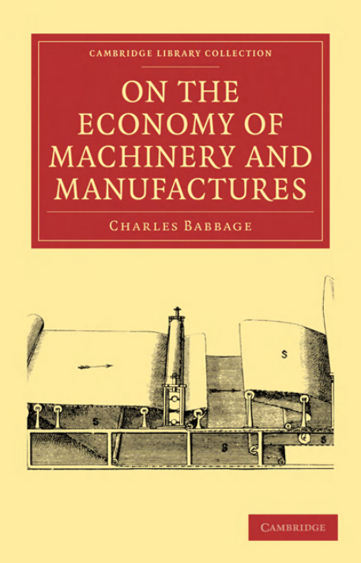
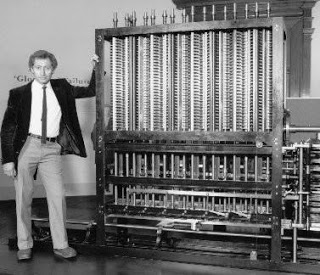

El primero de estos dispositivos fue concebido en 1786 por Johann Helfrich von Müller pero nunca fue construido. La máquina diferencial fue olvidada y años más tarde redescubierta, en 1822, por Charles Babbage, quien la propuso en una comunicación a la Royal Astronomical Society el 14 de junio, de título "Nota sobre el uso de maquinaria para el cómputo de tablas matemáticas muy grandes". Esta máquina usaba el sistema de numeración decimal y se accionaba por medio de una manivela. El gobierno británico financió inicialmente el proyecto, pero retiró la subvención cuando Babbage repetidamente solicitaba más dinero pero no hacía ningún progreso visible en la construcción de la máquina. Entre 1847 y 1849 Babbage se encaminó a diseñar su mucho más general máquina analítica pero posteriormente produjo un diseño mejorado de la máquina diferencial (su "máquina diferencial No. 2").

Una máquina diferencial es una calculadora mecánica de propósito especial, diseñada para calcular funciones polinómicas. Puesto que las funciones logarítmicas y trigonométricas pueden ser aproximadas por polinomios, esta máquina es más general de lo que parece al principio. Es un dispositivo de naturaleza mecánica para calcular e imprimir tablas de funciones. Más concretamente, calcula el valor numérico de una función polinómica sobre una progresión aritmética obteniendo una tabla de valores que se aproxima a la función real (basado en que cualquier función puede ser aproximada por polinomios).
En su faceta de ingeniero y economista, Babbage fue protagonista en primera línea de la revolución industrial y sus principios. Publicó en 1832 On the Economy of Machinery and Manufactures, sobre la organización y el diseño racional de la producción industrial. El libro se vendió bien y fue una obra influyente en la investigación operativa (o investigación de operaciones), que por entonces era una incipiente disciplina. En esta obra describió lo que hoy día se conoce como “el principio de Babbage”, enfocado a lograr ventajas comerciales a partir de una más cuidadosa división del trabajo. Babbage formuló este principio a partir de sus observaciones personales del trabajo en las fábricas. [4, pp. 137-138].
Al dar clic en la siguente imagen, podrás encontrar el libro "On the Economy of Machinery and Manufactures, escrito por Charles Babbage, en formato PDF"

“Dividiendo el trabajo total en diferentes procesos, cada uno de los cuales requiere diferentes grados de destreza o de fuerza, el patrón puede comprar exactamente la cantidad precisa de ambas (fuerza y destreza) que es necesaria para cada proceso. Mientras que si todo el trabajo fuera ejecutado por un solo obrero, éste debe poseer la destreza suficiente para realizar la parte más difícil y, a la vez, la fuerza suficiente para ejecutar la parte más laboriosa.” En otras palabras, Babbage advirtió que los trabajadores cualificados suelen pasar parte de su tiempo realizando tareas que están por debajo de sus valiosas competencias específicas

Charles Babbage ha sido considerado por algunos como el padre de las computadoras modernas, pero sin duda también puede ser considerado el padre de las impresoras modernas. Más de 150 años después de sus planos y un trabajo minucioso del Museo de Ciencias de Londres, dieron como resultado la construcción de la Máquina de Diferencias. Los planos del matemático y científico incluían un componente de impresión, el cual ha sido reconstruido por el Museo y es funcional. Esta impresora consta de 8000 piezas mecánicas y pesa aproximadamente 2,5 toneladas. Fue tan innovadora para su época y podemos apreciarlo hoy, que es capaz de imprimir automáticamente los resultados de un cálculo y un usuario puede cambiar parámetros como espacio entre líneas, elegir entre dos tipografías, número de columnas y otros. Su sofisticación llega a tal punto que puede generar (fabricar) los moldes de las impresiones que podrían ser usados por las imprentas aún hoy en día. Esta impresora lamentablemente no lleva un nombre ya que Babbage la incluyó en sus planos de la Máquina Analítica, pero basta con aludir a ella como la impresora de Babbage para reconocer en este hombre un visionario.